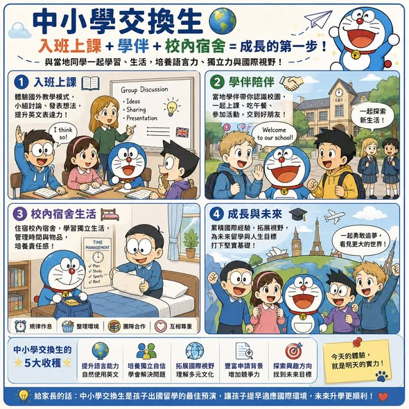

《看懂制度，選對世界》第一集
中小學交換生：出國前的第一場預演
】 很多家庭談到 這段經驗，遠超過 或者 孩子會和當地同學一起上課、吃飯、活動、生活，在每天互動中練習英文，也開始培養獨立、自信與國際視野。. 走進當地教室，孩子會感受到國外課堂的學習方式。

】 很多家庭談到 這段經驗，遠超過 或者 孩子會和當地同學一起上課、吃飯、活動、生活，在每天互動中練習英文，也開始培養獨立、自信與國際視野。. 走進當地教室，孩子會感受到國外課堂的學習方式。老師常鼓勵學生發問、討論、簡報與小組合作，學生也需要用英文表達想法。這類經驗能幫助孩子提早熟悉海外學習文化，未來銜接海外高中、暑期課程或大學課堂時，會更快進入狀況。. 第一次到國外校園，孩子最需要的是同齡朋友帶領。當地學伴可以陪孩子認識校園、一起吃午餐、參加活動，也讓英文練習變得自然。
孩子會學到如何開口聊天、加入團體、理解文化差異，也有機會建立國際友誼。. 住宿校內宿舍，是海外生活的提前演練。孩子要自己整理房間、管理物品、配合作息，也要學習與室友、宿舍老師相處。這對培養生活自理、時間管理與團體生活能力很有幫助，也讓家長能評估孩子未來是否適合長期海外學習。. 國外大學重視成績，也重視學生的國際經驗、適應能力與個人成長。交換生經驗可以放進未來申請文件，成為很有溫度的履歷亮點。孩子可以展現自己曾經入班上課、與當地學生合作、參與校園活動、住宿校內宿舍，並提早理解海外教育環境。
. 結語 中小學交換生，是孩子出國前很好的預演。入班上課，理解國外教室。學伴陪伴，練習英文溝通。校內住宿，培養獨立生活。與當地同學一起生活，累積跨文化經驗。如果未來目標是 或 點擊下方標籤，看更多 Peter 的深度分析